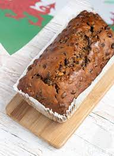

Enjoy beautiful scenery

Discover The Enchantment Of Wales,
Right From The Tip Of Your Tongue.
Background
Within Wales, our cuisines are known for their hearty, comforting dishes that incorporate locally sourced ingredients such as lamb, seafood, and cheese.
Some of our most famous dishes include Welsh rarebit, cawl, bara brith, and laverbread.
History
Below are some of our most popular dishes, click on the images for more knowledge!

Welsh cakes are highly valued in Wales as a traditional delicacy.
Cawl is a traditional Welsh stew made with lamb or beef, root vegetables, and leeks, and is considered a national dish of Wales.

Bara brith is a traditional Welsh tea bread made with dried fruit and spices, and is considered a staple in Welsh baking.